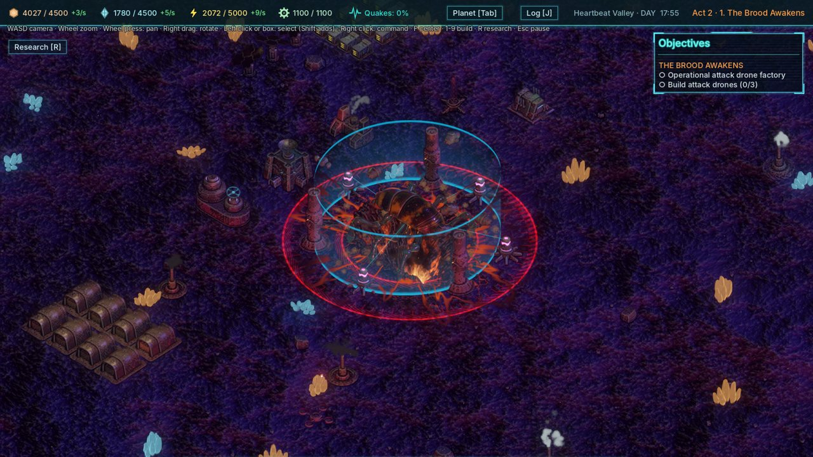
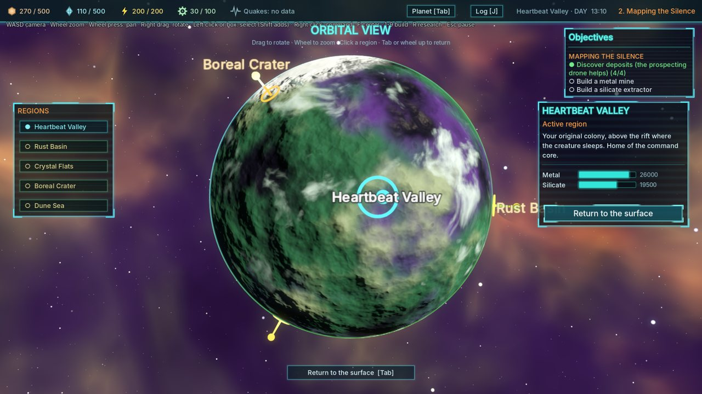
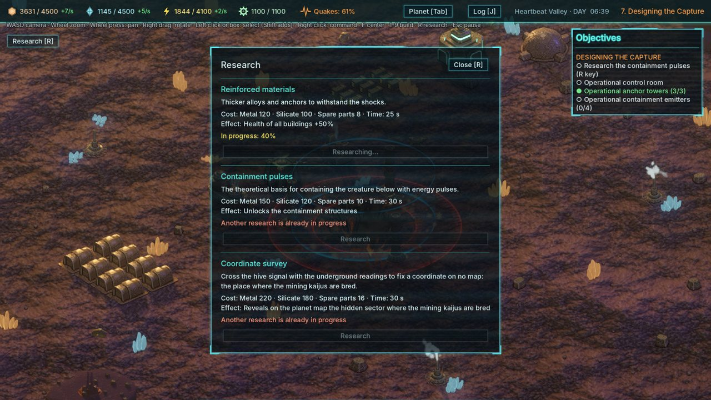
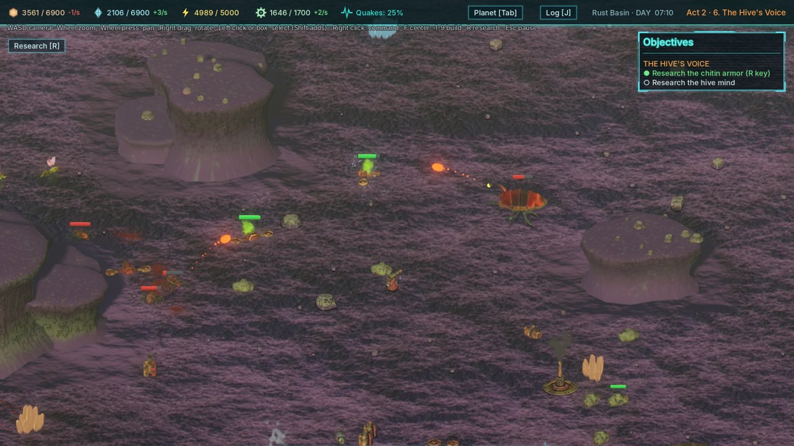
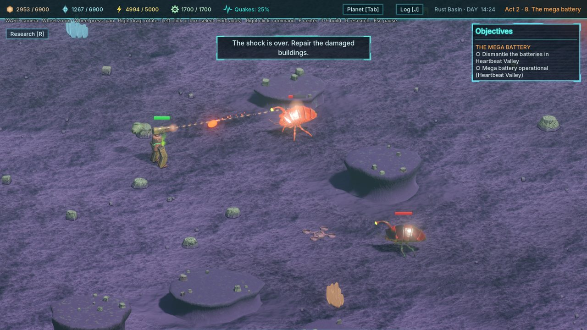
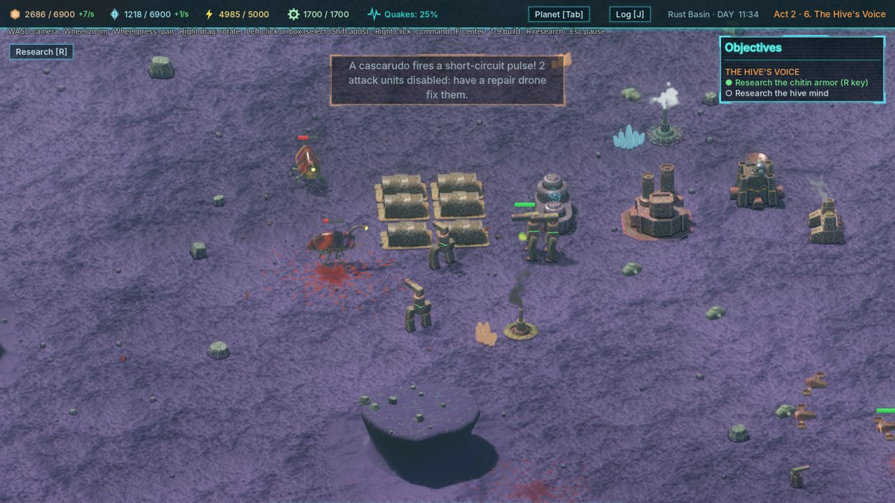
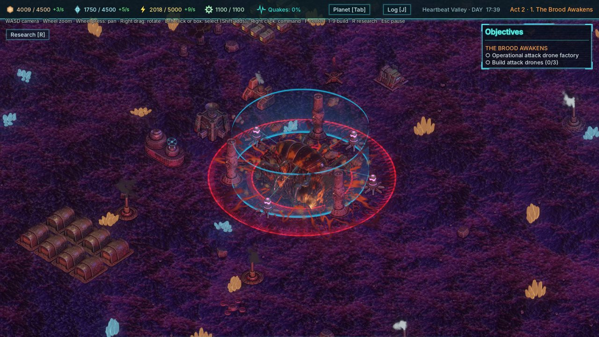

Torres, emisores y un campo de contención que tiembla con cada latido.
Towers, emitters and a containment field that shakes with every heartbeat.
Una colonia automatizada con drones, sitiada por las crías.
A drone-run colony under siege by the brood.
Del suelo a la órbita en un solo zoom. Cinco regiones y un sector oculto.
From ground to orbit in one zoom. Five regions and a hidden sector.
Kaijus Inc mezcla construcción de colonias al estilo de los grandes juegos de gestión planetaria con una idea tan simple como peligrosa: encerrar a un kaiju gigante y vivir de su energía.
Kaijus Inc blends planetary colony-building with an idea as simple as it is dangerous: lock up a giant kaiju and live off its energy.
Aterrizás de emergencia en un planeta hostil con un núcleo de mando, un par de drones y pocos recursos. Abajo, el suelo late con un ritmo que no es el de los motores. Esa es la primera pista de lo que duerme bajo la colonia.
La base crece en vista isométrica 3D: minas, extractores, baterías, talleres y depósitos. Los drones hacen todo el trabajo: construyen, prospectan, transportan y reparan. Tu tarea es planificar, priorizar y decidir.
Hasta que el sismógrafo se vuelve loco. La criatura emerge del foso y la colonia tiene que diseñar su captura: sala de control, torres de anclaje y emisores que forman un aro de estática holográfica. Si una torre cae, el campo se abre.
Con la reina cautiva llega la energía... y la venganza de sus crías. Cadetes, voladores y cascarudos atacan en oleadas cada vez más grandes. La demo pide minar, construir y defender: torretas, barreras, minas terrestres y una economía que tiene que aguantar el asedio.
Más adelante, una coordenada revela un sector oculto donde se crían los kaijus mineros. Se puede invadir y armar un corral holográfico donde esas criaturas producen metal y silicato para tu industria. ¿Cuántos monstruos se pueden domesticar antes de que el planeta diga basta?
You crash-land on a hostile planet with a command core, a couple of drones and scarce resources. Below, the ground beats with a rhythm that isn't the engines'. That's the first hint of what sleeps beneath the colony.
The base grows in 3D isometric view: mines, extractors, batteries, workshops and depots. Drones do all the work: they build, prospect, haul and repair. Your job is to plan, prioritize and decide.
Until the seismograph goes wild. The creature emerges from the pit and the colony must engineer its capture: a control room, anchor towers and emitters that weave a ring of holographic static. Lose a tower and the field breaks open.
With the queen caged comes the power... and her brood's revenge. Cadets, flyers and shell-backs strike in ever-larger waves. The demo is about mining, building and defending: turrets, barriers, land mines and an economy that has to survive the siege.
Later, a coordinate reveals a hidden sector where mining kaijus are bred. Invade it and build a holographic corral where those creatures produce metal and silicate for your industry. How many monsters can you tame before the planet fights back?

Drones de prospección descubren depósitos de metal y silicato; los de carga los llevan a los núcleos.
Prospector drones find metal and silicate deposits; haulers carry them back to the cores.
Colocás hologramas y los constructores levantan la obra solos. Todo se puede desmontar y recuperar.
Place holograms and builder drones raise them on their own. Anything can be dismantled and recycled.
Investigás pulsos de contención y armás el anillo antes de que la criatura rompa la superficie.
Research containment pulses and build the ring before the creature breaks the surface.
Torretas, drones de ataque y minas contra oleadas de crías que no dejan de crecer.
Turrets, attack drones and mines against ever-growing waves of brood.





Las crías atacan por oleadas cada vez más grandes: cadetes que cargan por tierra, voladores que escupen lava desde el aire y cascarudos enormes, duros y con triple ataque, capaces de dejar fuera de combate a tus drones. Cada oleada pone a prueba dónde pusiste las torretas, cuántos drones de reparación tenés y si tu economía aguanta el ritmo.
The brood attacks in ever-larger waves: cadets charging on foot, flyers spitting lava from above and huge, tough shell-backs with a triple attack that can knock your drones out cold. Every wave tests where you placed your turrets, how many repair drones you have and whether your economy can keep up.

Press kit de Kaijus Inc, por LYNX. El formato de revista es un homenaje a las revistas de juegos de los 90. Todas las imágenes son capturas del prototipo en desarrollo. Kaijus Inc press kit, by LYNX. The magazine format is a tribute to 90s game magazines. All images are captures from the in-development prototype.